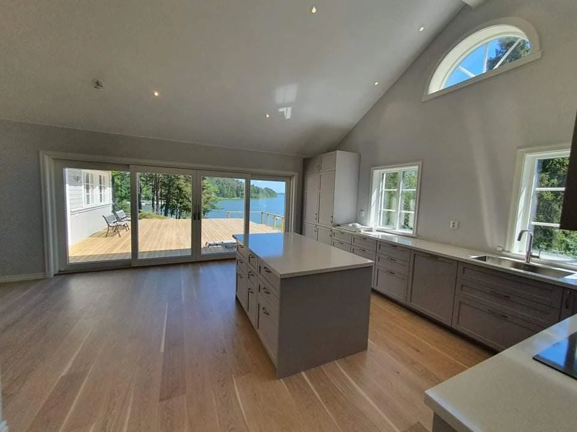
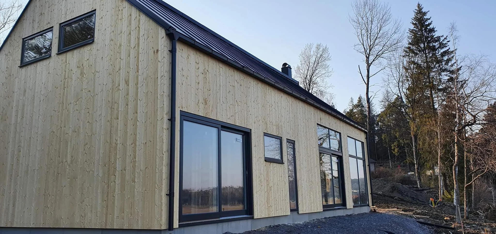
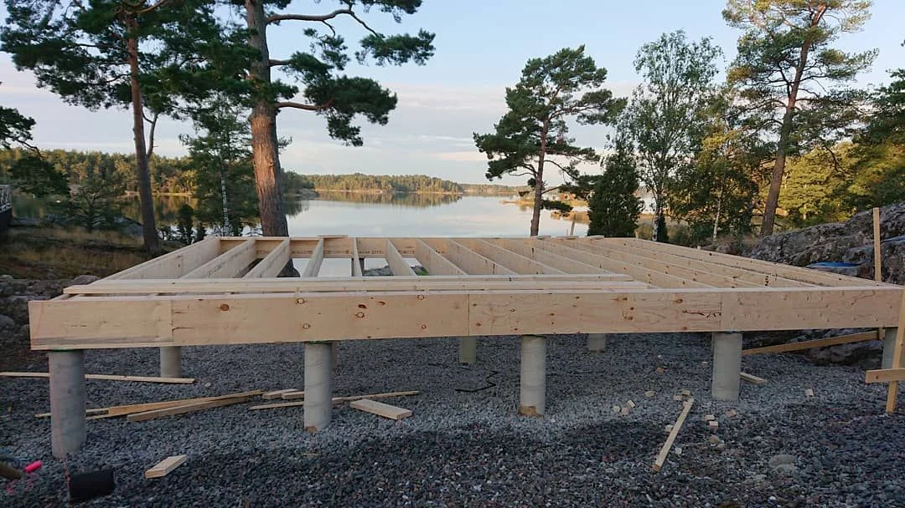

Renovering & ombyggnad
Ett hem förändras med livet. Vi hjälper till med renoveringar och ombyggnader, från ett enskilt rum till mer omfattande förändringar.
Läs om renoveringSmå anpassningar och stora byggplaner.
Vi hjälper dig att komma vidare.

Ett hem förändras med livet. Vi hjälper till med renoveringar och ombyggnader, från ett enskilt rum till mer omfattande förändringar.
Läs om renovering
Ett nytt hus, en tillbyggnad eller en ny byggnad på tomten. Trosa Byggtjänst tar sig an både mindre och större byggprojekt med utgångspunkt i dina idéer.
Läs om ny- & tillbyggnad
En plats för båten och stunderna vid vattnet. Bryggor och båthus är en del av de arbeten vi utför. Berätta om platsen och vad du vill göra, så tar vi samtalet vidare.
Läs om bryggor & båthus
Trädäck, trappor och snickerier som tar vara på husets och tomtens förutsättningar. Vi hjälper till med mindre arbeten och specialanpassningar, liksom delar av ett större projekt.
Läs om altaner & snickeriEn idé, en ritning eller en fråga. Hör av dig till Tobias och berätta om ditt projekt.